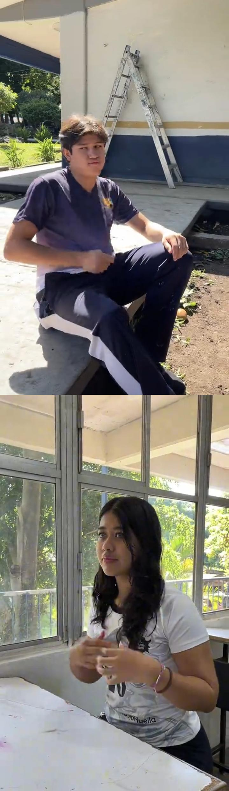
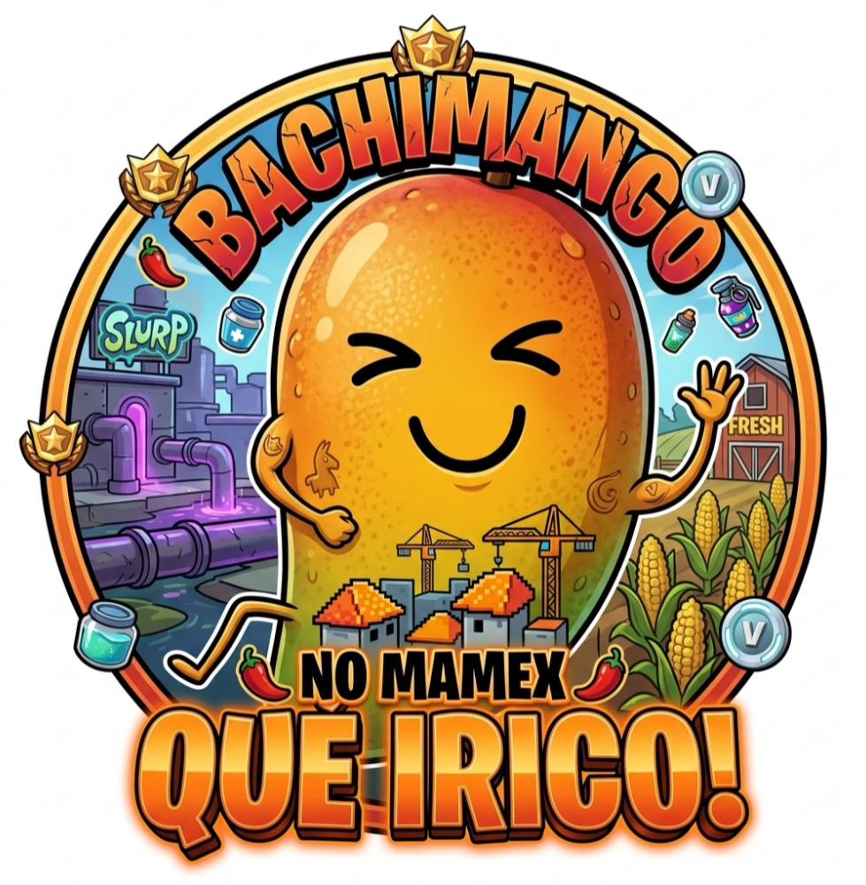

El talento y la colaboración hacen posible cada logro.
BachiMango es el resultado del esfuerzo conjunto de estudiantes comprometidos con la innovación, la creatividad y el emprendimiento. Cada integrante aportó sus conocimientos y habilidades para convertir una idea en un proyecto real.

Estudiantes de sexto semestre que participaron activamente en la planeación, producción, promoción y comercialización de los productos derivados del mango.
Diseño de elementos gráficos, logotipo, materiales promocionales y contenido visual utilizado durante el proyecto.
Preparación y elaboración de los productos, garantizando una presentación atractiva y una adecuada organización del proceso.
Difusión de información, promoción de actividades y acercamiento con la comunidad escolar.
Atención a clientes, organización de pedidos y comercialización de los productos elaborados.
"Participar en BachiMango permitió desarrollar habilidades de liderazgo, organización y trabajo colaborativo."
"El proyecto demostró que la creatividad puede transformar recursos disponibles en oportunidades de crecimiento."
"Cada etapa del proceso representó una experiencia práctica que fortaleció nuestros conocimientos académicos."

Fotografía representativa de los estudiantes que participaron en el desarrollo y consolidación del proyecto.